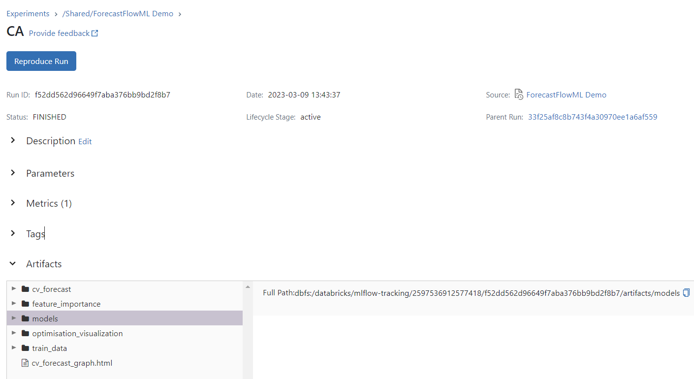
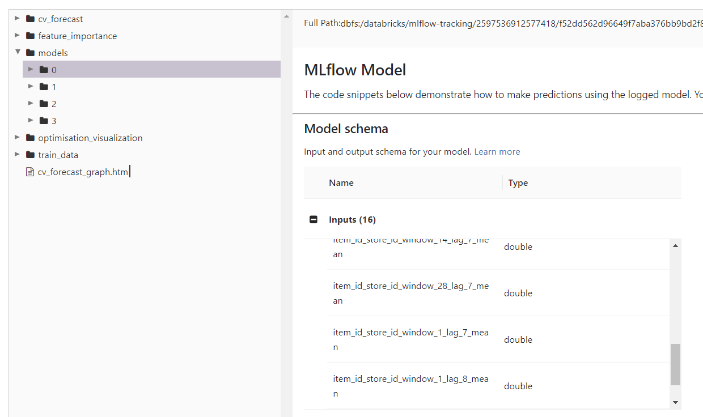
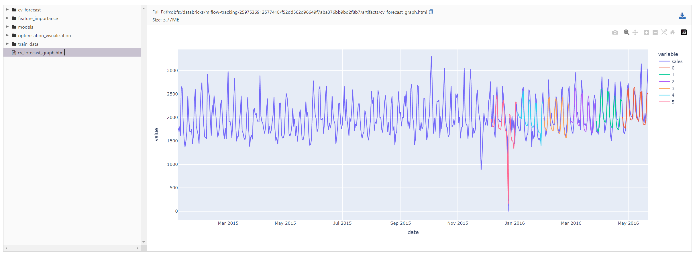
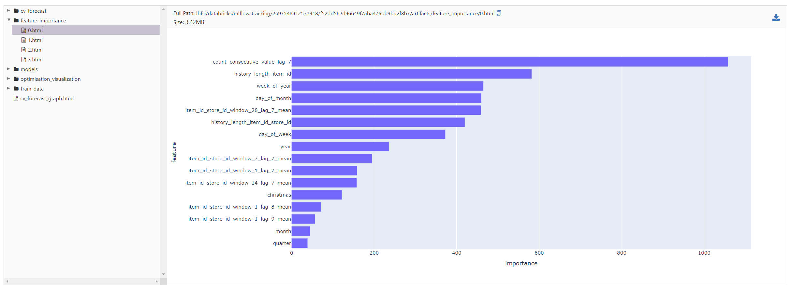

Distributed Models Over Distributed Data#
As a data scientist, image a scenario that you need to develop a machine learning algorithm to predict over 1,000,000 time series. If your dataset has high frequency and long history, then it is probably not going to fit into your machine’s memory. However, you also know that your dataset contitutes from groups (stores, items, sensors etc.) and you know that each of these slices are small enough to fit into your machine’s memory. In this case, it would be preferable to slice your dataset by groups and create an individual ML model. This would also allow you to parallelize the model training and inference process. Moreover, you will be still using your loved Python based ML algorithms but in a much scaleable way. This approach also contribute to decreasing the run times and increase your experimentation speed.
ForecastFlowML is a Python library that aims to help data scientists with: - Creating training/inference workflow in an embarrassingly parallel way thanks to PySpark. - Enabling using your favorite libraries such as Scikit-learn, XGBoost and LightGBM. - Developing an individual model per group. - Providing PySpark based time series feature extraction tool. - Building a seperate model to predict each forecast horizon. - Time-based cross validation. - Bayesian hyperparameter optimisation. - Model registry, artifact management and experiment tracking using MLflow.
In this tutorial, we are going to demonstrate the ForecastFlowML capabilities using a subset of the Kaggle M5 Forecasting (https://www.kaggle.com/c/m5-forecasting-accuracy) dataset.
Requirements#
In order to follow the tutorial, you need to install the ForecastFlowML. If not, please check the installation guideline.
Import packages#
[15]:
from forecastflowml.meta_model import MetaModel
from forecastflowml.preprocessing import FeatureExtractor
from forecastflowml.data.loader import load_walmart_m5
from pyspark.sql import SparkSession
import pyspark.sql.functions as F
import plotly.io as pio
pio.renderers.default = "jupyterlab"
Initialize Spark#
[16]:
spark = (
SparkSession.builder.master("local[*]")
.config("spark.sql.execution.arrow.enabled", "true")
.config("spark.driver.memory", "8g")
.config("spark.sql.adaptive.enabled", "false")
.config("spark.sql.shuffle.partitions", "4")
.getOrCreate()
)
Load sample dataset from package#
[17]:
df = load_walmart_m5(spark)
df.show()
+--------------------+-----------+-------+------+--------+--------+-----+----------+---------+
| id| item_id|dept_id|cat_id|store_id|state_id|sales| date|christmas|
+--------------------+-----------+-------+------+--------+--------+-----+----------+---------+
|FOODS_1_013_TX_2_...|FOODS_1_013|FOODS_1| FOODS| TX_2| TX| 2.0|2011-01-29| 0|
|FOODS_1_013_TX_2_...|FOODS_1_013|FOODS_1| FOODS| TX_2| TX| 5.0|2011-01-30| 0|
|FOODS_1_013_TX_2_...|FOODS_1_013|FOODS_1| FOODS| TX_2| TX| 3.0|2011-01-31| 0|
|FOODS_1_013_TX_2_...|FOODS_1_013|FOODS_1| FOODS| TX_2| TX| 0.0|2011-02-01| 0|
|FOODS_1_013_TX_2_...|FOODS_1_013|FOODS_1| FOODS| TX_2| TX| 0.0|2011-02-02| 0|
|FOODS_1_013_TX_2_...|FOODS_1_013|FOODS_1| FOODS| TX_2| TX| 0.0|2011-02-03| 0|
|FOODS_1_013_TX_2_...|FOODS_1_013|FOODS_1| FOODS| TX_2| TX| 0.0|2011-02-04| 0|
|FOODS_1_013_TX_2_...|FOODS_1_013|FOODS_1| FOODS| TX_2| TX| 1.0|2011-02-05| 0|
|FOODS_1_013_TX_2_...|FOODS_1_013|FOODS_1| FOODS| TX_2| TX| 0.0|2011-02-06| 0|
|FOODS_1_013_TX_2_...|FOODS_1_013|FOODS_1| FOODS| TX_2| TX| 3.0|2011-02-07| 0|
|FOODS_1_013_TX_2_...|FOODS_1_013|FOODS_1| FOODS| TX_2| TX| 0.0|2011-02-08| 0|
|FOODS_1_013_TX_2_...|FOODS_1_013|FOODS_1| FOODS| TX_2| TX| 3.0|2011-02-09| 0|
|FOODS_1_013_TX_2_...|FOODS_1_013|FOODS_1| FOODS| TX_2| TX| 1.0|2011-02-10| 0|
|FOODS_1_013_TX_2_...|FOODS_1_013|FOODS_1| FOODS| TX_2| TX| 1.0|2011-02-11| 0|
|FOODS_1_013_TX_2_...|FOODS_1_013|FOODS_1| FOODS| TX_2| TX| 1.0|2011-02-12| 0|
|FOODS_1_013_TX_2_...|FOODS_1_013|FOODS_1| FOODS| TX_2| TX| 6.0|2011-02-13| 0|
|FOODS_1_013_TX_2_...|FOODS_1_013|FOODS_1| FOODS| TX_2| TX| 4.0|2011-02-14| 0|
|FOODS_1_013_TX_2_...|FOODS_1_013|FOODS_1| FOODS| TX_2| TX| 0.0|2011-02-15| 0|
|FOODS_1_013_TX_2_...|FOODS_1_013|FOODS_1| FOODS| TX_2| TX| 0.0|2011-02-16| 0|
|FOODS_1_013_TX_2_...|FOODS_1_013|FOODS_1| FOODS| TX_2| TX| 0.0|2011-02-17| 0|
+--------------------+-----------+-------+------+--------+--------+-----+----------+---------+
only showing top 20 rows
Feature Engineering#
Create feature extractor model#
[18]:
preprocessor = FeatureExtractor(
id_col="id",
date_col="date",
date_frequency="day",
target_col="sales",
target_encodings=[
{
"partition_cols": ["item_id", "store_id"],
"windows": [7, 14, 28],
"lags": [7, 14, 21, 28],
"functions": ["mean", "std"],
},
{
"partition_cols": ["item_id", "store_id"],
"windows": [1],
"lags": [7, 8, 9, 14, 15, 16, 21, 22, 23, 28, 29, 30],
"functions": ["mean"],
},
],
date_features=[
"day_of_month",
"day_of_week",
"week_of_year",
"quarter",
"month",
"year",
],
history_lengths=["item_id", ["item_id", "store_id"]],
encode_events={
"cols": ["christmas"],
"window": 15,
},
count_consecutive_values={"value": 0, "lags": [7, 14, 21, 28]},
)
Extract features and checkpoint dataframe to save intermediate results#
[19]:
df_preprocessed = preprocessor.transform(df).localCheckpoint()
df_preprocessed.show()
Training#
Split dataset into train and test#
[ ]:
df_train = df_preprocessed.filter(F.col("date") <= "2016-05-22")
df_test = df_preprocessed.filter(F.col("date") > "2016-05-22")
initialize meta model#
[ ]:
model = MetaModel(
# dataset parameters
group_col="cat_id", # column to slice dataframe
id_cols=["id"], # columns to use as time series identifier
date_col="date", # date column
target_col="sales", # target column
date_frequency="days", # date frequency (days, weeks, months, years) of dataset
# model parameters
model_horizon=7, # horizon per model
max_forecast_horizon=28, # total forecast horizon
lag_feature_range=2, # extra lags to include as features based on model horizon
# cross validation and optimisation parameters
n_cv_splits=1, # number of time-based cv splits
cv_step_length=28, # number of dates between each cv folds
max_hyperparam_evals=1, # total number of optuna trials
scoring="neg_mean_squared_error", # sklearn scoring metric
# optuna hyperparameter space
hyperparam_space_fn=lambda trial: {
"num_leaves": trial.suggest_int("num_leaves", 20, 30)
},
)
Train the model#
[ ]:
model.train(df_train)
2023/03/14 02:14:22 WARNING mlflow.utils.requirements_utils: The following packages were not found in the public PyPI package index as of 2023-02-28; if these packages are not present in the public PyPI index, you must install them manually before loading your model: {'forecastflowml'}
c:\Users\caner.turkseven\Anaconda3\envs\spark\lib\site-packages\_distutils_hack\__init__.py:30: UserWarning:
Setuptools is replacing distutils.
C:\spark-3.0.0-bin-hadoop3.2\python\pyspark\sql\pandas\group_ops.py:73: UserWarning:
It is preferred to use 'applyInPandas' over this API. This API will be deprecated in the future releases. See SPARK-28264 for more details.
Check your estimators#
[ ]:
model.estimators
{'HOUSEHOLD': {'horizon_0': LGBMRegressor(num_leaves=26),
'horizon_1': LGBMRegressor(num_leaves=27),
'horizon_2': LGBMRegressor(num_leaves=23),
'horizon_3': LGBMRegressor(num_leaves=23)},
'HOBBIES': {'horizon_0': LGBMRegressor(num_leaves=29),
'horizon_1': LGBMRegressor(num_leaves=22),
'horizon_2': LGBMRegressor(num_leaves=25),
'horizon_3': LGBMRegressor(num_leaves=21)},
'FOODS': {'horizon_0': LGBMRegressor(num_leaves=30),
'horizon_1': LGBMRegressor(num_leaves=30),
'horizon_2': LGBMRegressor(num_leaves=22),
'horizon_3': LGBMRegressor(num_leaves=22)}}
Cross validation forecast results across groups#
[ ]:
model.cv_forecast_graph['HOUSEHOLD']
Data type cannot be displayed: application/vnd.plotly.v1+json
Feature importance graphs per group and forecat horizon#
[ ]:
model.feature_importance_graphs['HOUSEHOLD']['horizon_1']
Data type cannot be displayed: application/vnd.plotly.v1+json
Open MLflow UI#
You can also see all of the metrics/models/features/cv forecast/optimisation visualisations on the MLFlow UI. - If you are running locally, you can open the MLflow UI by getting into the directory and using the mlflow ui command. - If you are using Databricks Notebooks, you need to open the Experiments section from the Machine Learning Workspace.

Click on one of the groups#
Logged models per forecasting horizon and used features#
Aggregated cross validation forecast graph for all time series in the group#
Feature importance graph per model#
Optimisation Visualisations#

Inference#
[ ]:
import mlflow
loaded_model = mlflow.pyfunc.load_model(f"runs:/{model.run_id}/meta_model")
loaded_model.predict(df_test).show(truncate=False)
---------------------------------------------------------------------------
AttributeError Traceback (most recent call last)
c:\Users\caner.turkseven\Documents\GitHub\ForecastFlowML\docs\source\notebooks\demo1.ipynb Cell 38 in <cell line: 2>()
<a href='vscode-notebook-cell:/c%3A/Users/caner.turkseven/Documents/GitHub/ForecastFlowML/docs/source/notebooks/demo1.ipynb#X52sZmlsZQ%3D%3D?line=0'>1</a> import mlflow
----> <a href='vscode-notebook-cell:/c%3A/Users/caner.turkseven/Documents/GitHub/ForecastFlowML/docs/source/notebooks/demo1.ipynb#X52sZmlsZQ%3D%3D?line=1'>2</a> model = mlflow.pyfunc.load_model(f"runs:/{model.run_id}/meta_model")
<a href='vscode-notebook-cell:/c%3A/Users/caner.turkseven/Documents/GitHub/ForecastFlowML/docs/source/notebooks/demo1.ipynb#X52sZmlsZQ%3D%3D?line=2'>3</a> model.predict(df_test).show(truncate=False)
AttributeError: 'PyFuncModel' object has no attribute 'run_id'
[ ]: